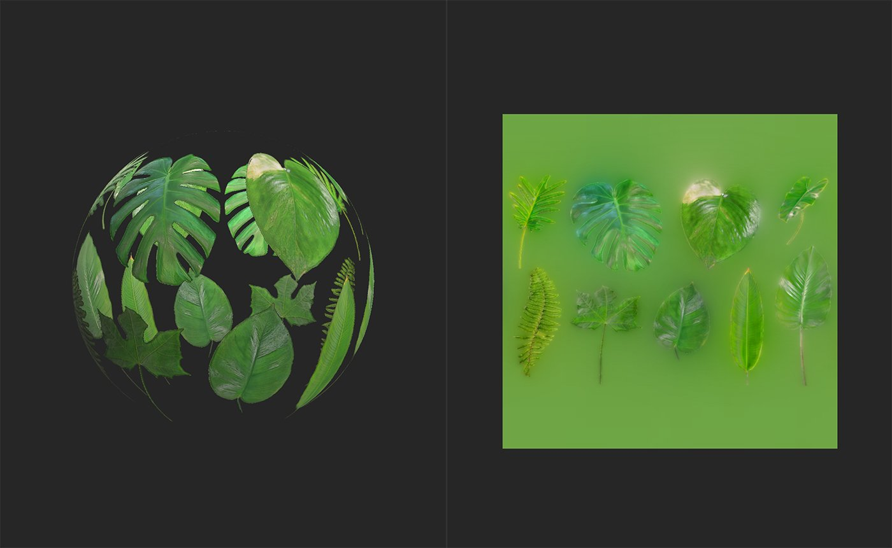
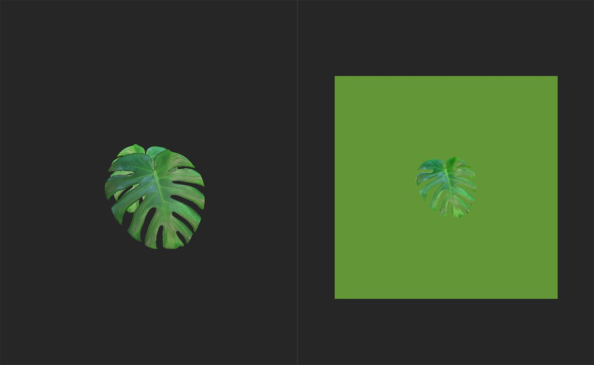

In: Tools
The Atlas Splitter is a useful tool to organize and view the elements of an atlas.
The images below show the Atlas Splitter in action.

The above image shows an atlas material added to the layer stack. use the Atlas Splitter to select specific elements from the atlas.

With the Atlas Splitter added to the layer stack, it's possible to focus on a single leaf, or any other element of the atlas material.
Basic parameters
Advanced Parameters